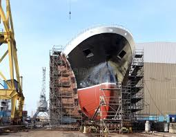

Building a cargo ship is a complex engineering project that takes place in large shipyards. The process involves thousands of workers and many different stages of construction. Each stage must be completed carefully to ensure the final vessel is safe, strong, and capable of carrying heavy loads across long ocean voyages.
Modern shipbuilding uses advanced machinery and precise planning to assemble huge steel sections into the final structure of the ship. These sections are welded together and fitted with engines, navigation equipment, and cargo handling systems before the vessel is launched into the water for testing and final preparation.